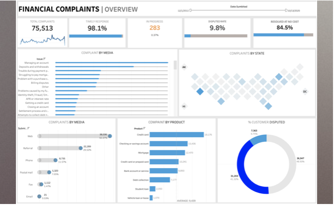

Data! Data! Data! Cannot make bricks without clay’. Data is the new oil, and it fascinates me.
A Statistics (H) graduate and a diploma holder in Data Science
I have always enjoyed reading mystery and detective related novels. So that’s how I look at big data sets: to me it is one
big mystery novel I want to solve. Finding patterns nobody else sees is the challenge to me. My passion for detective related
stuffs and story-telling got me into pursuing Data Science.
A sincere, competent and a motivated person. I believe that learning and gaining experience must never be stopped.
I am a very organised person with creative thinking and computer skills. I am a quick learner skilled at statistical concept
tools and languages.
Learning and improving myself and my skills on daily basis.
Created a tool that estimates data science salaries (MAE ~ $ 11K ; R2 Score ~ 78%) to help data scientists and data analyst negotiate their income when they get a job.
I built a flask API endpoint that was hosted on a local webserver. The API endpoint takes in a request with a list of values from a job listing and returns an estimated
salary which turns out to best approach.
A simple web application which uses Cosine Similiarity to give Book Recommendation to any reader by providing the name of the book and also
tells us about the top 50 books.
In this project we scrape data from AmbitionBox to analyze about different companies. Features include :
Company_Name, Ratings, Review, Company, Type,
Headquarters, Company Age
Tool used: Python
In this project we are using excel to Analyze Q2 YoY for XYZ Company and providng the necessary actions to be taken.
Tool used: Excel

A dashboard has been made on Financial Complaints data of a XYZ company that tells the stakeholders important information about the complaint section.
Tool used: Tableau
In this project I am using SQL to explore the Covid Data.
Tool used: MYSQL
In this project we are predicting the Flight Fare. A Machine Hack Problem.
In this project we are predicting the prices for Houses in Bangalore(Accuracy=0.944).